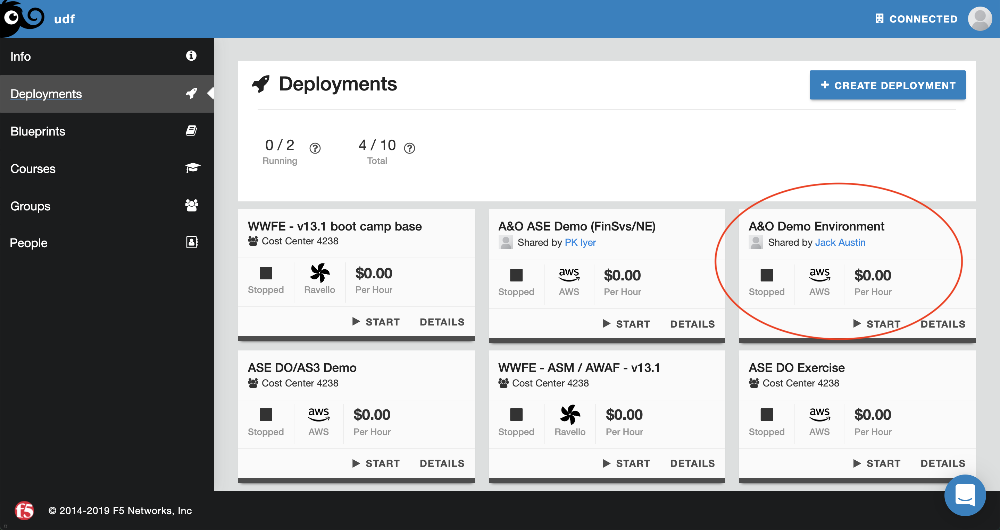
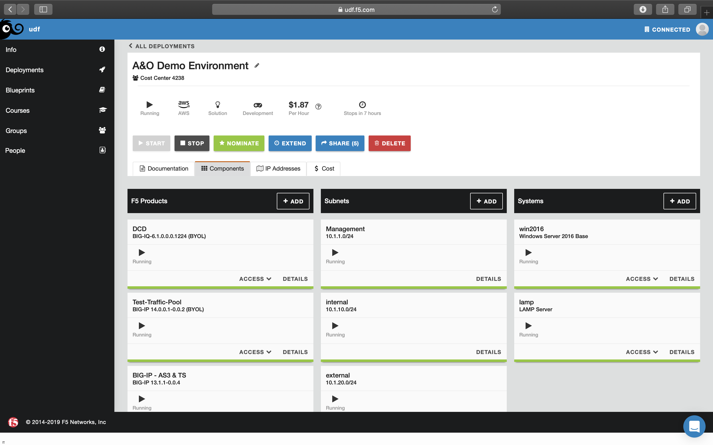

4.1. Setup AWS CloudWatch IAM User¶
- In your local browser, navigate to “https://federate.f5.com”

- Click on the “AWS Console” tile.
- Open “Services” dropdown in the top menu bar.
- Under “Security, Identity and Compliance”, click on “IAM”.
- Click “Users” in the left menu bar.
- Click on the “Add User” button.
- Under Set User Details enter a user name “my_user”.
- Under Select AWS access type select Programmatic access.
- Select the Blue “Next: Permissions” button on the bottom right.
- Under “Add user to group” select any group with “Administrator Access” as an Attached Policy.
- Select the Blue “Next: Tags” button on the bottom right.
- Dismiss the “Add User” section by selecting the Blue “Next: Review” button on the bottom right.
- Dismiss the “Review” section by selecting the Blue “Create User” button on the bottom right.
- Copy the Access Key and Secret access key and paste them in Notes or Stickies. Close the window by clicking “Close”.
4.2. Setup AWS CloudWatch Log Group¶
- In your local browser, navigate to “https://federate.f5.com”
- Click on the “AWS Console” tile.
- Open “Services” dropdown in the top menu bar.
- Open “Services” dropdown in the top menu bar.
- Under “Management & Governance”, click on “Cloudwatch”.
- Click “Logs” in the left menu bar.
- Click the blue “Let’s Get Started” button.
- Click the grey “Create Log Group” button.
- In “Log Group Name” enter “my_log_group”, click “Create log group”.
- Click “my_log_group”.
- Click “Create Log Stream” button.

- In “Log Stream Name” enter “test_log_stream”, click “Create Log Stream”.
4.3. Deploy and Start UDF¶
- Navigate to https://udf.f5.com
- Open “Blueprints” in the left menu bar.
- In the search bar enter, “A&O Toolchain Demo”.
- Click the green “Deploy” button.
- Open “Deployments” in the left menu bar.
6. In the “A&O Toolchain Demo” tile, click “Start”, Open “Components” in the menu bar wait until all components have started.
- Under the “Systems” in the “win2016” tile, click the “Access” dropdown and click “RDP”.
- Open the RDP session download. Login credentials can be found by navigating to “Details” in the win2016 component.
- Once in the win2016 component navigate to the “Details” tab and find the credentials for the RDP session highlighted below.
- Enter the credentials in your RDP client to begin your session.
4.4. Configure Postman¶
- Once in the RDP session, open the Postman application.
- At the bottom of the page in grey text select “Skip signing in and take me straight to the app”.
- If presented with one, exit the pop-up screen. Toggle off “SSL certification verification” by navigating to File then Settings then under the General tab, toggle SSL certification verification.
4.5. Send Declaration¶
- Click the collection Lab 4.1 - Telemetry Streaming.
- Click the request “Get Telemetry Services Version Info” then click the send button. This returns version and release information for the instance of Telemetry Streaming you are using. It also shows current and minimum required versions of the Telemetry Streaming schema.
- Now we will post a declaration. Click the request “POST Telemetry Streaming Services to AWS CloudWatch” then click the send button.
- Click the request “Get Telemetry Services Info” then click the send button. This will retrieve the declarations you previously sent to Telemetry Streaming.
4.6. Generate Traffic on BIG-IP¶
- In the RDP session, open Chrome.
- Click on the “BIG-IP (10.1.1.7)” bookmark.
- Login to the BIG-IP with the username “admin” and the password “admin”
- In the Common partition navigate to Local Traffic -> Network Map.
Note
The virtual server, Existing_VS, along with its pool, existing_pool, have been preconfigured for this lab to produce traffic for Telemetry Streaming.
- Generate traffic by opening a new tab and navigating to the virtual server IP address and port combination “10.1.20.29:8080”.
- Reload the page 5+ times.
4.7. View Logs in AWS CloudWatch¶
- Login to AWS console from https://federate.f5.com
- Click on services.
- Click on cloudwatch.
- Click on dashboard.
- Click on create dashboard.
- Give your dashboard a name and click create button.
- Select query results and click add to dashboard.
- You can see the dashboard is created.
- Go back to cloudwatch menu and click on insight under Logs.
- Select your log group in the top for results, select your duration (ex. 1 day) and run query to get results from logs.
- Click on the actions tab and add the current results from logs to dashboard we created.
- Select dashboard name, query results tab and add to dashboard.
- Go back to dashboard in cloudwatch and select your dashboard name.
- Click on any log from list to inspect the entries.
Note
This is the end of the module